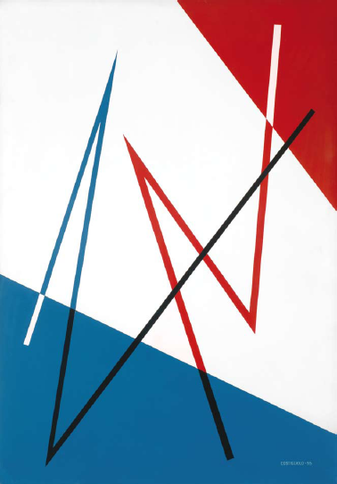

1902
Nacimiento1921
19 años.-
Etapa
PLANSIMO
Estudia en el círculo de Bellas Artes.Influencias
Sus Maestros:
Vicente Puig y Guillermo Laborde -
Obras
1927
25 años.-
Etapa
DISEÑO GRÁFICO
Abandona la pintura y se dedica al diseño gráfico y publicidad.Influencias
Conoce al gran artista argentino Emilio Pettoruti
-
Obras

1946
44 años.-
Etapa
MAQUINISTA: Abstracciones.
Retorna a la pintura y comienza una etapa plástica llamada maquinista.Influencias
Fundación de Grupo de Arte Concreto MADÍ.
-
Obras
1951
49 años.-
Etapa
Arte GEOMÉTRICO:
Influencias
Conoce a María Freire, artista uruguaya con quien contrae matrimonio.
-
Obras
1954
52 años.Obras

1958
56 años.Obras
1961
59 años.Obras
1964
62 años.Obras
1965
63 años.Obras
1967
65 años.Obras
1971
69 años.Obras


1975
73 años.Obras

1977
75 años.Obras
1980
78 años.Obras
1983
81 años.Obras
1984
82 años.Obras
1985
83 años.Obras
Muere a la edad de 83 años.